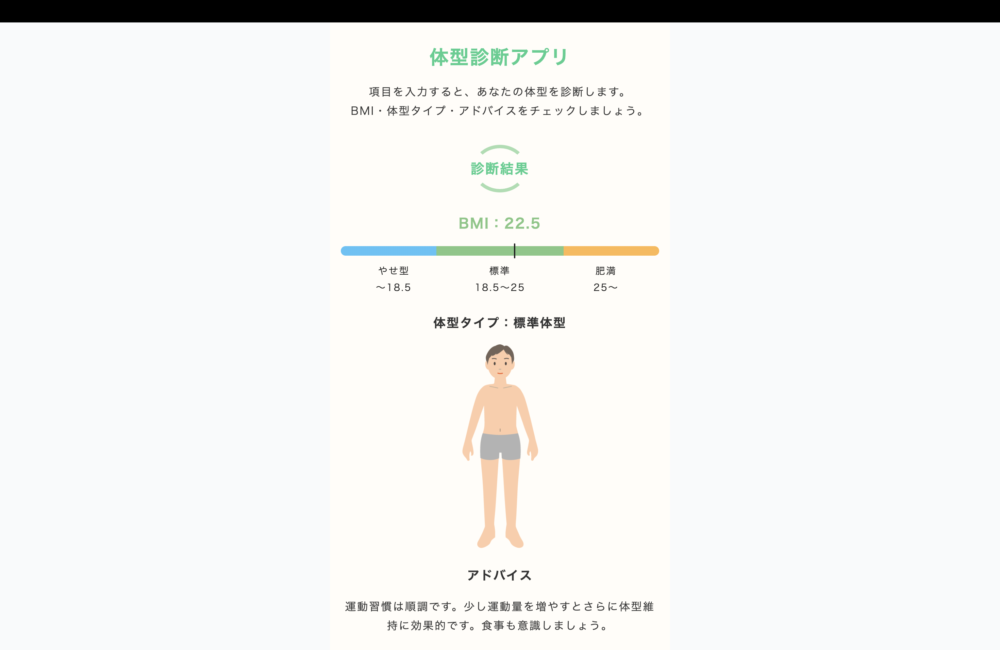

作品名
体型診断アプリ
作品概要
母親から「登山をよくしているのに、なかなか理想の体型になれない」と相談を受けたことをきっかけに、体型診断アプリを制作しました。必要な情報を入力するだけで、自分のBMIや体型を簡単に診断できます。
アピール・こだわり
診断結果に応じて男女別の体型イラストを表示するようにしました。自分の体型を視覚的にイメージしやすくなり、結果の理解度と説得力が向上したと思います。母親にも安心して使ってもらえるよう、アプリのUIには親しみやすく優しい配色を採用しました。また、アプリやBMIについてわからない方のために、ページ下部に説明を記載し、誰でも理解しやすい構成にしています。
使用技術
HTML、CSS、JavaScript、React、Vite
制作時間
5時間30分